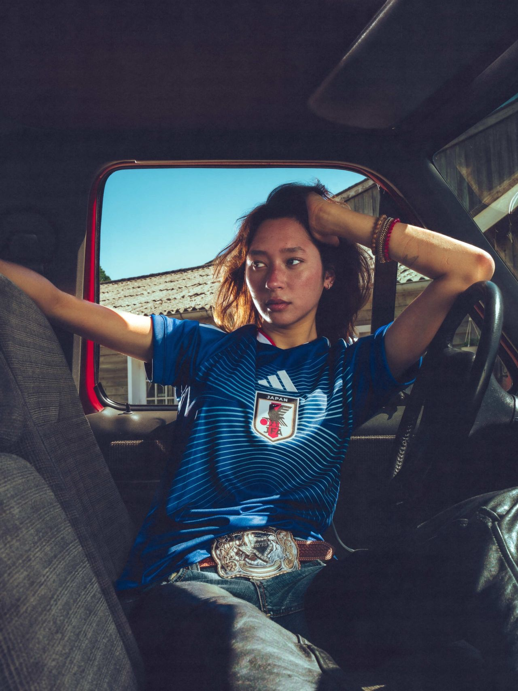
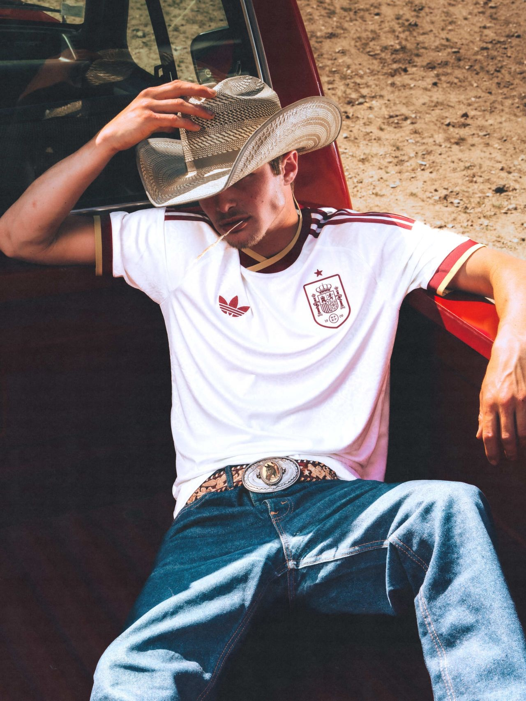
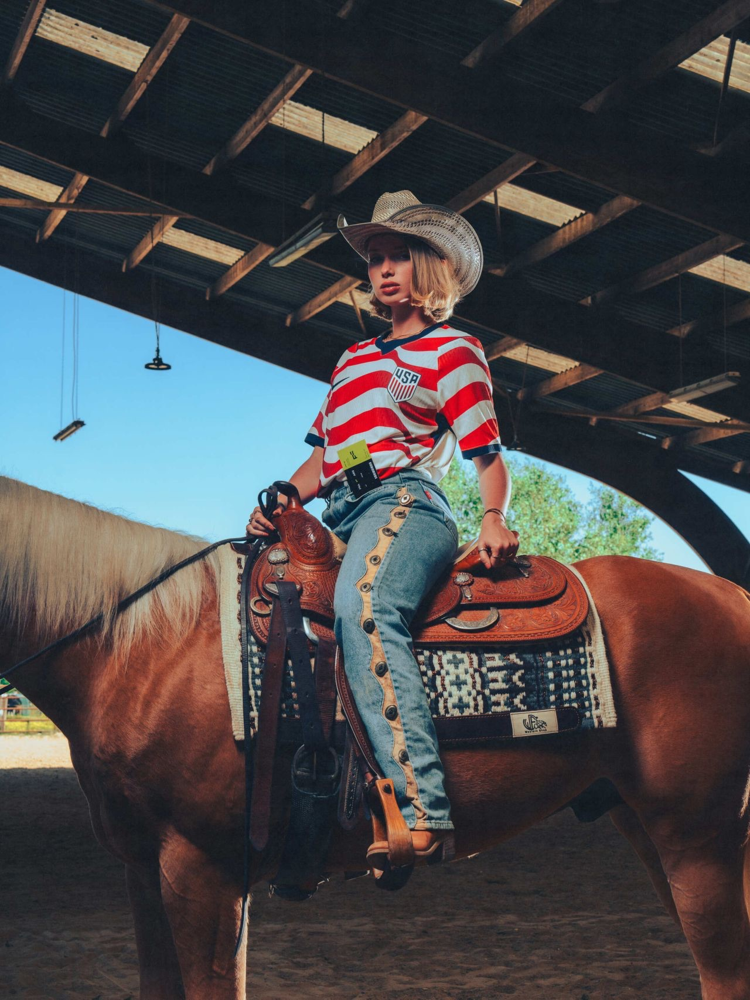
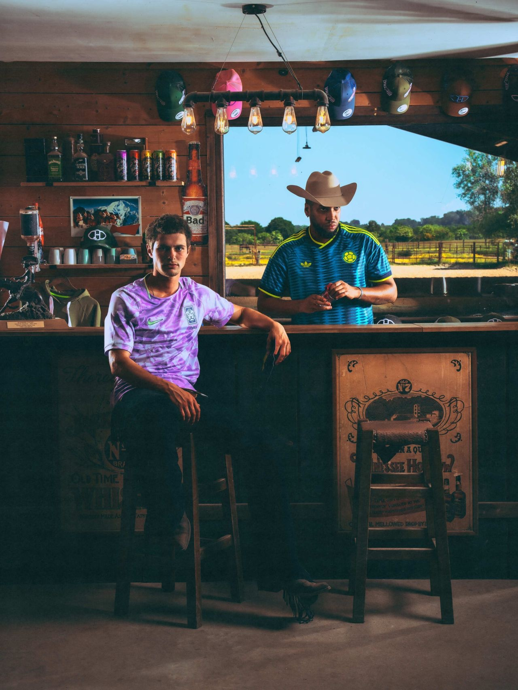

Le projet
Faire dialoguer la culture maillot avec l'iconographie de l'Ouest américain, à quelques semaines d'une Coupe du Monde qui revient sur le sol US.
Pour FOOTCENTER, Penalty Studio™ a conçu et produit une campagne pensée pour s'inscrire dans le moment culturel du Mondial 2026. Le parti pris : sortir le maillot du stade et l'installer dans un ranch (chevaux, selles western, pick-up rouge, saloon) pour ouvrir un terrain visuel rarement exploré dans le foot, et le pousser jusqu'au bout.
Un brief produit transformé en parti pris créatif fort, qui sert autant la marque que la conversation culturelle autour du sport.


Mon rôle
Assistante de production, de la préparation jusqu'au plateau.
Aux côtés de l'équipe de production, j'ai contribué à faire passer la vision créative du papier au terrain : organisation du shooting, coordination entre casting, stylisme et lieu, et suivi du plateau le jour J pour que chaque tableau (manège, pick-up, saloon) tienne jusqu'à la dernière image.
Une expérience au cœur d'une production complète d'agence, du brief client à la livraison des visuels.


Crédits
- Client
- Footcenter
- Agence & production
- Penalty Studio™
- Direction artistique
- Paul-Loup G.
Maxime Sebti
Anthony Meghzel - Photographie & post-production
- Maxime Sebti
- Lumières
- Axel R.
- Stylisme
- Penalty Studio™
Eureka Fripe - Cast
- Julie
Jules
Syriam
Edoardo - Production
- Paul-Loup G.
Guillaume Dumont - Assistante de production
- Lola Verhas
- Lieu
- Quarter Horse Dream